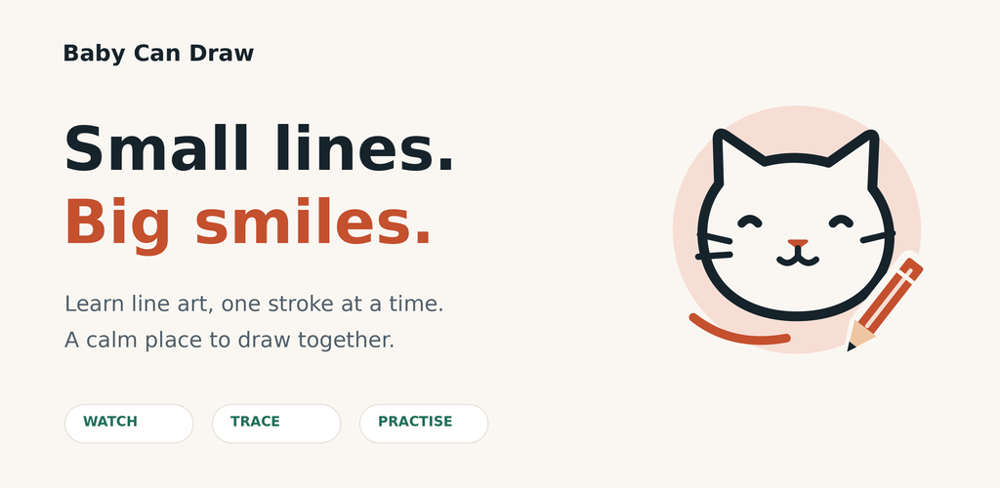
From “where do I start?”
to “I drew that!”
Pick a little artwork, watch a line take shape, then try it yourself. Made for beginners, children and the parents, older siblings and grown-ups who draw alongside them.
Watch a line
Animated lessons show where each stroke begins and which direction it follows. Pause and replay whenever you need.
Find your flow
Trace the guide, adjust the hints or make something your own. Undo, zoom and keep practising at your own pace.
Keep a little smile
Save your drawings in your device gallery. Come back to unfinished practice and export a PNG or SVG to share.
A look inside the app
Six phone images for the planned Google Play listing. Scroll to explore, or open any image at full size. Full guided access is shown; see access details below.
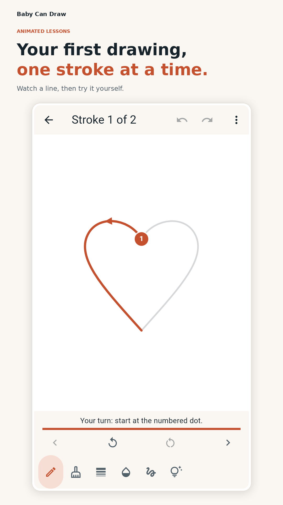
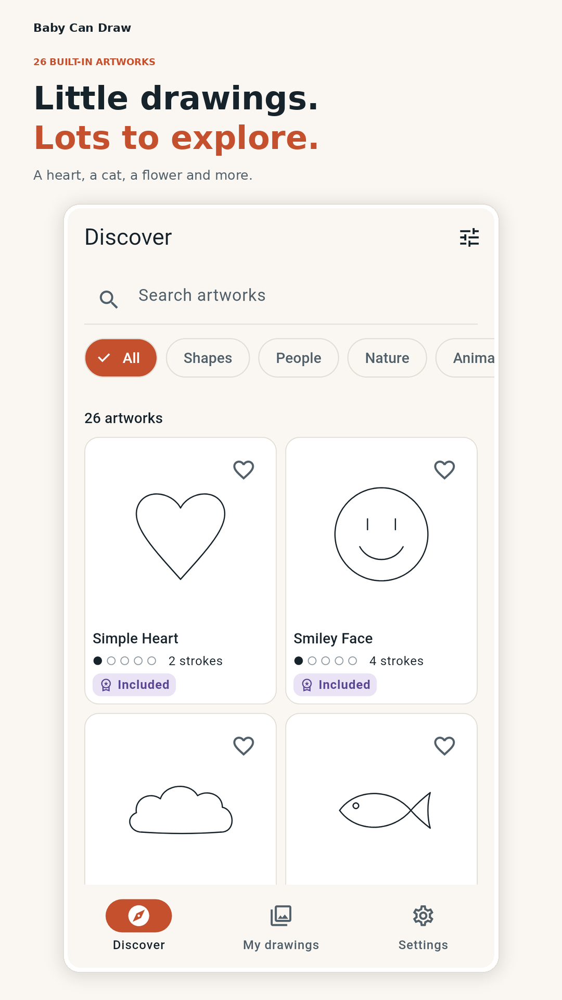
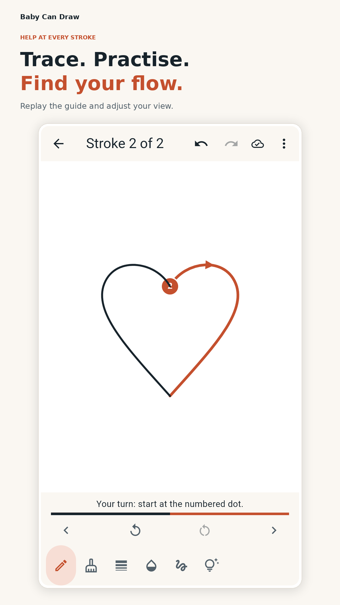
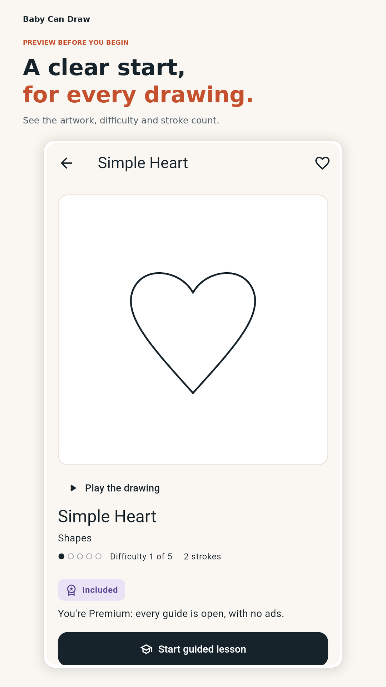
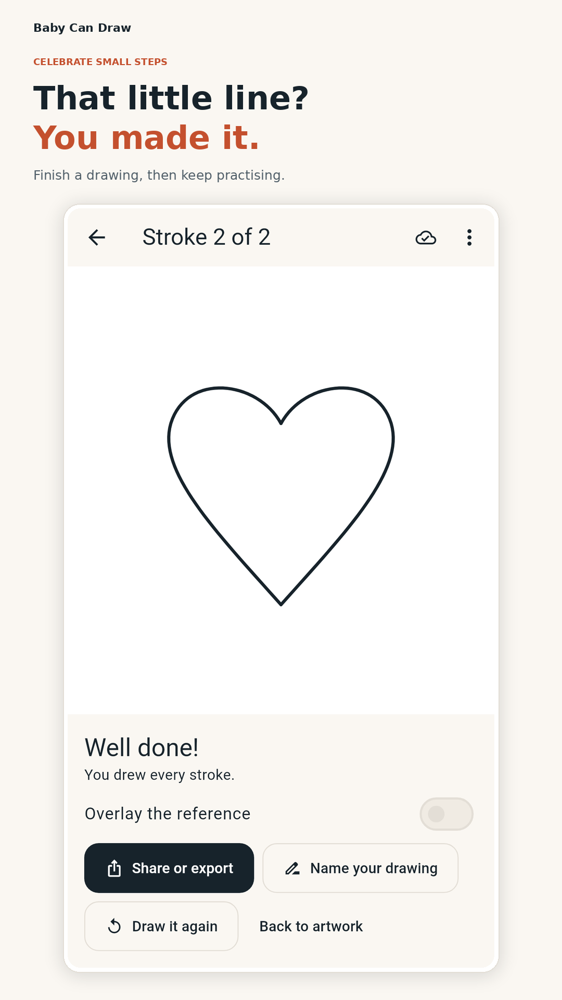
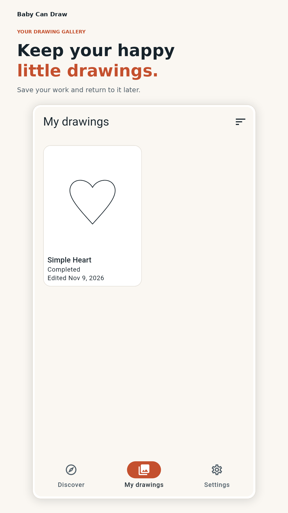
A little more room to draw
The same lessons, artwork and saved drawings, with a layout for larger screens.
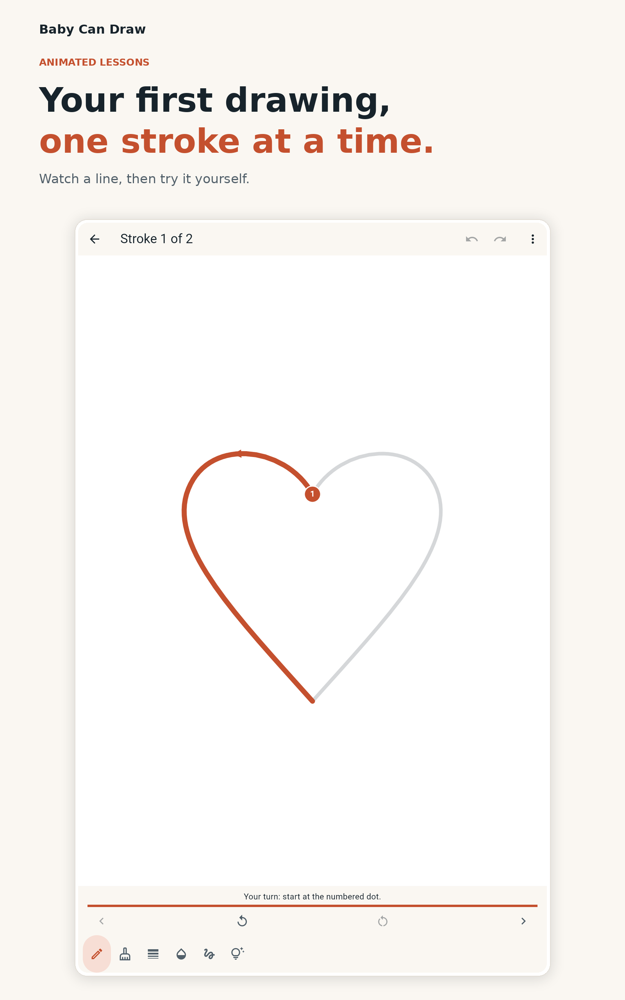
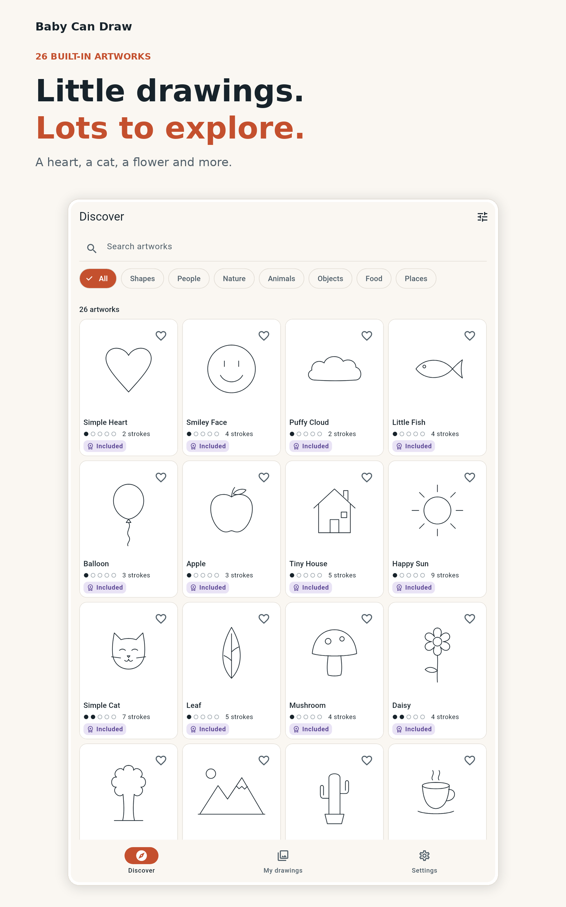
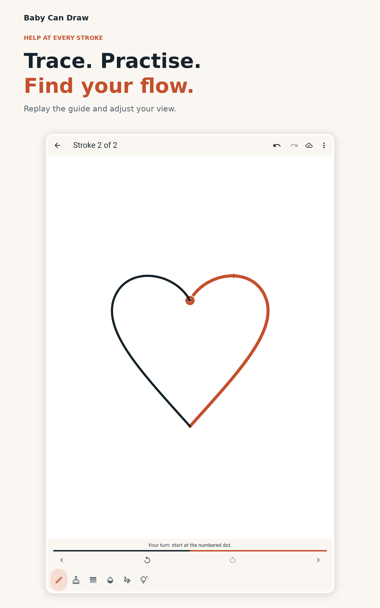
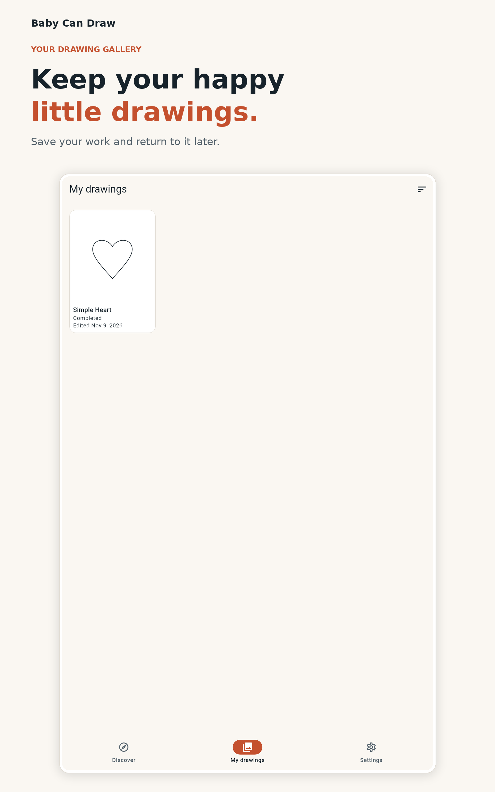
Start free. Keep discovering.
Artwork previews and free drawing are free. Selected beginner guides can be unlocked by choosing to watch a rewarded ad. Premium unlocks the full guided collection and removes ads while active.
Monthly and annual subscriptions renew automatically unless cancelled. Google Play will show the local price and full billing period before purchase. A grown-up gate protects purchase actions.
Browsing, previews and basic drawing work offline. Ads, purchases, restoration and subscription verification need an internet connection. The app interface is currently English.
About this listing preview
This page presents the planned Google Play listing. The Android release has not yet been submitted or published on Google Play. There is no installation link yet.
The images show the app's production screens and bundled artwork rendered in Android layouts. Ads, billing and storage are isolated during capture. Premium guidance is enabled for demonstration. Captions frame the complete app image; controls and results are part of the app.
Support, privacy and subscription terms are available on the Baby Can Draw support page.